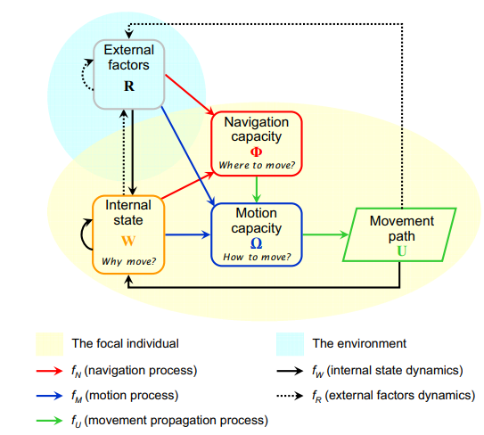
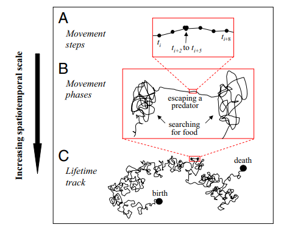
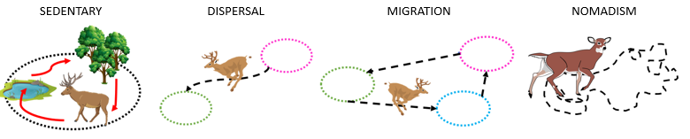
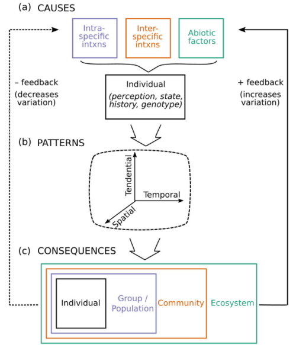
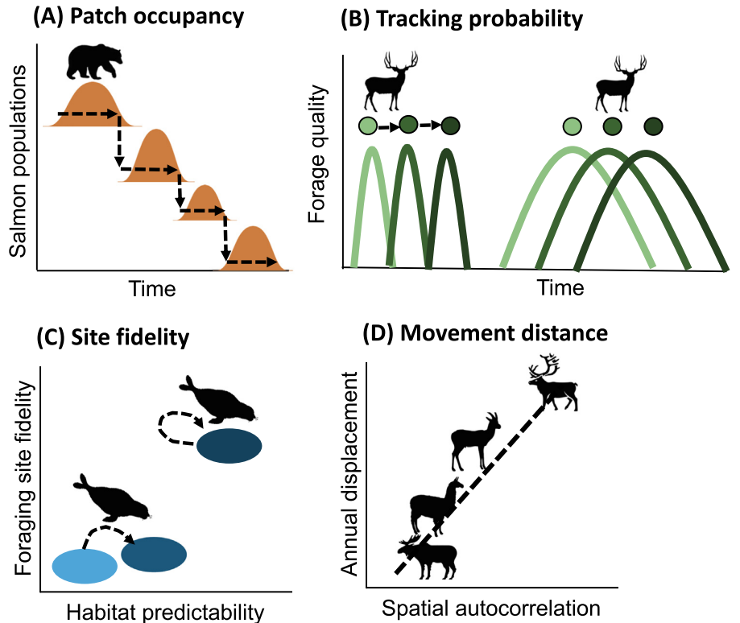
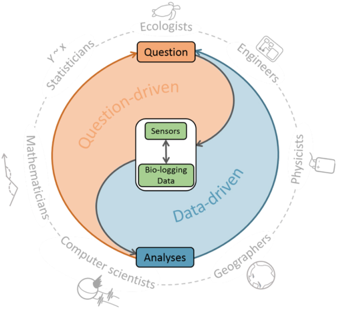
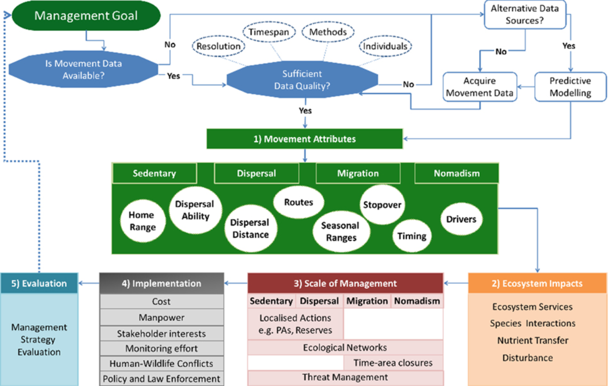

2 Kinds of movements, and kinds of questions
The what and the why of Movement Ecology
Movement ecology is a relatively new discipline that coalesced with the publication of a paper by Ran Nathan and colleagues (Nathan et al. 2008). Currently, it can be defined as a science studying the causes, mechanisms, and patterns of animal movement. In Nathan et al, “movement ecology” was distinguished from other ecological studies on behavior by its focus on the movement of individuals, where this individual movement is a process with multiple spatial and temporal scales. Nathan et al defined a movement ecology conceptual framework or paradigm (Figure 2.1), where the movement path of an individual is affected by both internal factors (e.g. the motion capacity, the navigation capacity, and the internal state) and external factors. Each of these factors answer a different question about the drivers of animal movement, including the why to move (the internal state - seeking resources? escaping a predator?), the how to move (the motion capacity - walk? run? fly? swim? how to biomechanically move?), and the where to move (navigation capacity - how to cognitively move? an internal compass sense? chemosensory abilities? visual clues?). External factors (e.g. the environment) interact with all these factors and shapes the trajectory or movement path of an individual.

An animal’s immediate and fine-scale movement can be captured with the step or the displacement of that animal between locations over some time period (Fig x.A). At an intermediate scale, a series of steps with similar characteristics can be lumped together to create movement phases (e.g., a mixture of movements that are straight and fast with those that are slow and tortuous, Fig x.B). At the broadest scale, all of these movement phases can be combined to determine behavior of an individual throughout its entire life history (Fig x.C).

Fig x. Scales of movement, Nathan et al 2008.
So what (broad) types of movement are ecologists interested in getting data for? Movement types can be sedentary, with local or “home range” movements between resource patches (Fig x.A); dispersive, with an individual moving from one location or population to another location or population (Fig x.B); migratory, with cyclical or seasonal movements between distinct habitats (Fig x.C); or nomadic, with wandering behavior and seemingly random movements (Fig x.D).

Fig x. Different broad types of movement.
These different movement types bring variation in movement that is seen across individuals within species. For example, an individual itself could demonstrate these different movement types within its lifetime (intra-individual variation) or individuals within a population could demonstrate these different movement types (inter-individual variation) or all individuals within a population may demonstrate the same movement type synchronously but may vary from other populations (inter-population variation). Variations can also be temporal (frequency and timing of movement) and spatial (distance covered, direction of movement). The different causes of movement (e.g., intra- or inter-specific interactions, abiotic factors, Fig x.A) interact with an individual’s internal state, perception, and genotype to create individual patterns (Fig x.B) of movement that have echoing effects for groups and populations, communities, and even ecosystems (Fig x.C).

Fig x. Causes, patterns, and consequences of variability in movement, Shaw 2020.
A primary driver of movement, environmental variation, often comes about with phenological or cyclic/seasonal changes in the resource landscape (e.g., the spatial and temporal configuration of resources). These changes can trigger fine-scale movement responses, termed resource tracking, that result in patterns of movement (e.g., migrations) at the population scale or higher. Resource landscapes have been defined as having 6 interacting “axes” that stimulate resource tracking. These include abundance, timing, ephemerality, and predictability of resource patches, which can result in different spatial configurations and variance of the resource landscape (Abrahms et al 2020). Understanding these axes can help create predictions of animal movement and resource tracking, such as predictions on patch occupancy (Fig x.A, even lower quality patches will be occupied in abundance over time with phenological variation in resource patches); tracking probability (Fig x.B, animals will move or resource track more when resources have high turn-over); site fidelity (Fig x.C, animals will demonstrate higher site fidelity when resources have high long-term predictability); and movement distance (Fig x.D, animals will have higher rates of movement to track resources with broad-scale variability). Thus, understanding animal movement is often dependent on being able to measure and quantify not just the movement of an animal, but also the abiotic environment and resource landscape around it.

Fig x. Examples of the six axes for prediction of animal resource tracking, Abrahms et al 2020.
A key limitation with using movement data to understand behavior is its dependence on both the sampling frequency and duration (Nathan et al 2008). In reality, the movement path or trajectory of an individual is continuous in time. However, movement data resolution is usually dependent on whatever biotelemetry device is being used to record the animal’s locations over time. The fix rate of these devices are generally discrete in time (and prone to error) and just a sample of the animal’s locations along its real trajectory. If one had an endless monitoring of movement for an animal, one could determine the lifetime track of an individual (Fig x.C). However, available technology and the high expense of biotelemetry monitoring has made this almost impossible for most animals (but see Cheng et al 2019 on the lifetime tracks of white storks) and instead, we are often limited to understanding shorter “chunks” of movement or behavioral phases (Fig x.B) for an animal. Due to the challenges of tagging newborn or juvenile individuals (e.g., high mortality rates, small body-to-tag ratios), our understanding of movement-based behavior is often even more limited to adult lifestages.
Biotelemetry devices, e.g. tags, have the ability to record, at the minimum, an individual’s personal identifier (id) and at the maximum, a slew of information such as the animal’s location in time, surrounding environmental data (e.g. air or water temperature, depth, etc), and even biological data (e.g. heart rate, accelerometry, mouth movements). Tag types range from passive monitors, such as with some acoustic tags that depend on the animal passing by a fixed receiver to record its location and id, to active monitors, such as with VHF radio telemetry devices, where researchers actively follow collared animals to pinpoint their locations. For animals that move or migrate long distances (e.g. the cryptic leatherback turtle, which performs the longest reptile migrations from one side of the ocean to the other), tags with the ability to record locations and other interesting information remotely and more long-term, such as GPS or ARGOS satellite tags, are often used. The trade-off with using a particular tag often comes with its cost, its size, and its spatial/temporal resolution…long term (6 months or more) ARGOS satellite tags, for example, are often only able to track adult animals due to the heavy weights of batteries and sensors. Additionally, they often result in positional errors greater than 10 km, requiring some fancy locational filters, interpolation methods, or movement models to reduce the error around positions.
All of this is what makes movement ecology such a complex study of animal behavior - it is a question-driven science that is also co-dependent on the rapidly evolving fields of both technology and data science (e.g., the Integrated Bio-logging Framework, Fig x). Researchers must be adept in both of these areas, as well as statistics, geographical mapping, and other fun quantitative skills. Thankfully, there is a plethora of resources out there for the budding movement ecologist (e.g., the handy R for Ecology online resource) and this book is meant to be one of them!

Fig x. The Integrated Bio-logging Framework, Williams et al 2019.
So what kinds of questions might you be interested in asking and answering in movement ecology? With advancements in technology and data science, the range of questions we can answer has expanded tremendously. Our focus has shifted somewhat from seeking to quantify and understand the movement of individuals (Nathan et al 2008) to quantifying and understanding the collective movement and migrations of individuals within a population. Refined abilities to simulate animal movement and accurately model both the internal state and external environment of an animal has allowed for questions on the role of learning and perception and memory for animal movement and navigation to be addressed. Increasingly, movement ecology faces pressure to create solutions and tools that address issues in animal conservation (Fig x), as the static conservation approaches of the past are often not effective for animals that migrate and have spatially and temporally dynamic movements and habitat use.

Fig x. A framework for merging movement data with management goals, Allen and Singh 2016.
The advent of smaller biotelemetry devices with longer duration batteries and a variety of sensors has further allowed for modeling and quantifying of animal movement behaviors to expand beyond two-dimensional movement (e.g., changes in latitude, longitude) to multi-dimensional movement (e.g., changes in latitude, longitude, and alitude or depth). Increasingly, we get closer with these advances to being able to quantify and understand the lifetime track of individual(s), with a rise in biotelemetry studies on juveniles and other cryptic lifestages. Some other questions of key interest in modern movement ecology studies include sociality of movement, impacts of movement on biodiversity research, and the impacts of anthropogenic activities and climate change. In the following chapters of this book, we will discuss a variety of quantitative approaches to analyzing a variety of movement data but the analysis you choose will largely be dependent on your question and the resolution, frequency, and sample size of your data.